02/09/2018 — Chuyện về 2 lần tắc mạch trên cùng một bệnh nhân: một lần được chuyên gia đọc điện tâm đồ, lần kia thì không
Bản dịch tiếng Việt của bài "A Tale of 2 Occlusions in the Same Patient: one with Expert ECG interpretation, the Other Without" – Dr. Smith’s ECG Blog. Giữ nguyên toàn bộ 32 hình ảnh và 2 video của bản gốc.
Ca bệnh do Nic Thompson gửi, Pendell Meyers viết, Steve Smith biên tập
Đây là một bài dài, nhưng rất đáng đọc vì nó cho thấy rõ sự khác biệt về kết cục của bệnh nhân giữa việc đọc điện tâm đồ nâng cao và tiêu chuẩn STEMI!
Dr. Thompson khám một bệnh nhân nam ngoài 40 tuổi, có tiền sử bệnh động mạch vành (CAD), đã bị nhồi máu cơ tim và được can thiệp mạch vành qua da (PCI) nhiều năm trước, đang hút thuốc, rối loạn lipid máu (HLD), tăng huyết áp (HTN), đến viện vì khó chịu ở ngực và vã mồ hôi, khởi phát khi bệnh nhân thức dậy vài giờ trước lúc đến viện. Cơn đau tăng giảm từng lúc cho đến khi đội cấp cứu ngoài viện (EMS) tới và cho bệnh nhân uống 325 mg aspirin trên đường đi, và cơn đau đã đỡ đáng kể ngay trước khi đến viện.
Đây là điện tâm đồ lúc nhập viện, khi bệnh nhân còn khó chịu khoảng 2/10 và đang đỡ dần:

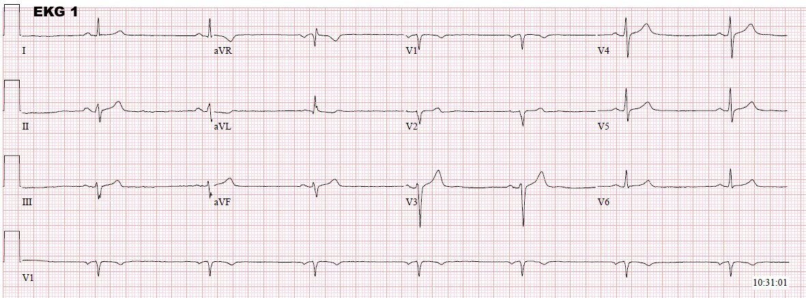
Bản thân điện tâm đồ này không chẩn đoán được điều gì. Tuy nhiên, hình thái ở chuyển đạo aVL hơi đáng ngờ với một sóng T dạng xuống-lên (down-up) kín đáo (phần cuối sóng T dương), gợi ý rằng có lẽ thành dưới đang được tái tưới máu. Sóng T ở các chuyển đạo dưới không chắc chắn là tối cấp mà cũng không rõ ràng là đang tái tưới máu. Vì vậy, chúng nằm trong giới hạn bình thường nếu bạn không có điện tâm đồ cũ để so sánh. Hãy nhớ rằng sóng T trông bình thường trong một thời gian ngắn ở giai đoạn chuyển tiếp từ tắc sang tái tưới máu và ngược lại.
Dr. Thompson đã ghi nhận mối lo ngại dựa trên bệnh sử của bệnh nhân cũng như các bất thường đáng ngờ trên điện tâm đồ, bao gồm “sóng T rộng ở II, III, aVF kèm chênh xuống kín đáo ở aVL… Nghi ngờ cao tắc mạch vành cấp có còn một phần tưới máu (có lẽ 2/2 [thứ phát do] ASA trên đường đến viện).”
Một lần nữa, chỉ dựa vào điện tâm đồ này thì tôi không thể nói rằng sóng T ở các chuyển đạo dưới là tối cấp. Một điện tâm đồ cũ sẽ rất có ích.
Đây là điện tâm đồ cũ để so sánh:

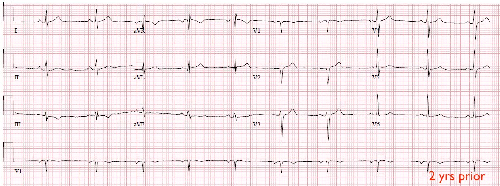
Sóng T ở các chuyển đạo dưới trên điện tâm đồ lúc nhập viện hơi lớn hơn và dương hơn so với điện tâm đồ nền. Tuy nhiên, việc đánh giá bị phức tạp thêm do trục hơi thay đổi giữa hai điện tâm đồ. Chuyển đạo aVL có sóng T dương trên điện tâm đồ nền, nhưng sóng T âm trên điện tâm đồ lúc nhập viện. Tăng tiến sóng R tương tự như trước.
Đọc hai điện tâm đồ này cùng nhau làm tăng mức nghi ngờ OMI ảnh hưởng ít nhất là các chuyển đạo dưới. Nhưng vẫn chưa rõ ràng là có giá trị chẩn đoán.
Bệnh nhân hết đau hoàn toàn trong lúc Dr. Thompson đang thăm khám, vì vậy phòng thông tim (cath lab) không được kích hoạt ngay, do đã có tái tưới máu trên lâm sàng, không còn đau ngực và chỉ có những dấu hiệu kín đáo mà nhìn chung bác sĩ tim mạch sẽ không chấp nhận. Siêu âm tại giường được thực hiện và không thấy rối loạn vận động thành nào rõ ràng (điều này không có gì bất ngờ khi đã tái tưới máu).
Dr. Thompson lo ngại trước những dấu hiệu kín đáo nêu trên và theo dõi bệnh nhân sát sao. Quả nhiên, 40 phút sau, cơn đau quay trở lại.
Đây là điện tâm đồ ghi lại của bệnh nhân:

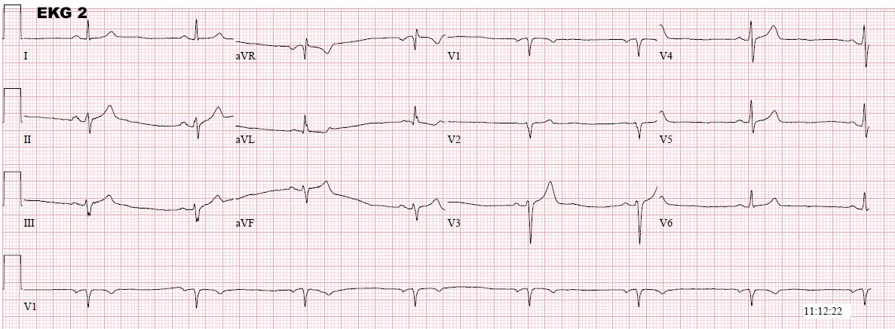
Lúc này Dr. Thompson đã kích hoạt phòng thông tim vì cơn đau đã quay lại cùng với các dấu hiệu đáng ngờ OMI. Vào thời điểm này, bác sĩ ghi nhận “sóng T động (dynamic) ở II, III, aVF với chênh xuống rõ hơn ở aVL.”
Trong lúc bác sĩ tim mạch đang khám bệnh nhân, cơn đau tăng thêm, và điện tâm đồ ghi lại này được thực hiện 12 phút sau đó:

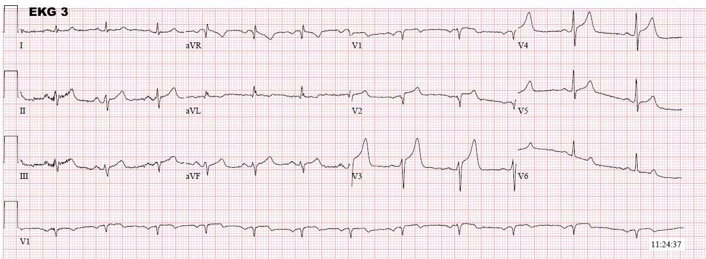

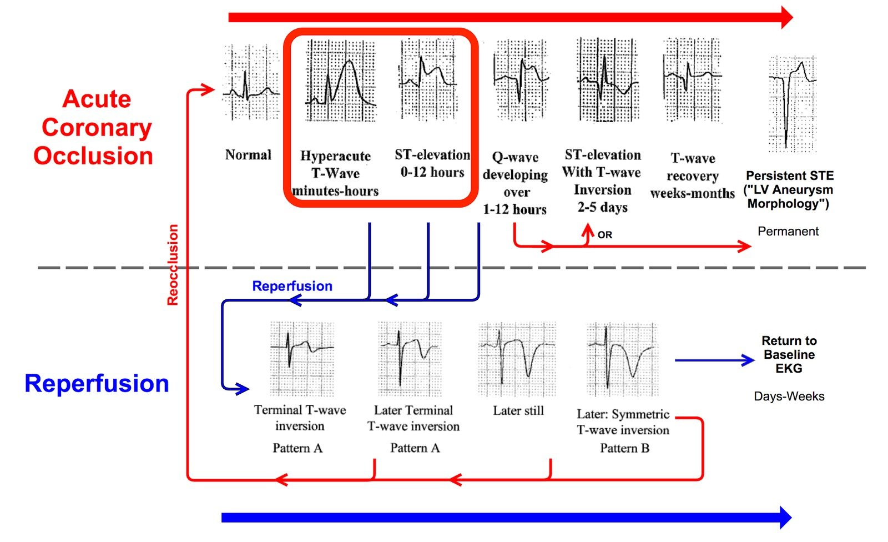
May mắn là OMI thành dưới đủ kín đáo để không biểu hiện ST chênh lên (STE) nhiều, vì trong những trường hợp như vậy người điều trị thường sẽ bị nhầm lẫn bởi STE “lan tỏa” và có nhiều khả năng nghi ngờ giá trị của hình ảnh OMI.
Bệnh nhân được đưa cấp cứu vào phòng thông tim.
Dr. Thompson đã đúng khi cho rằng có OMI:

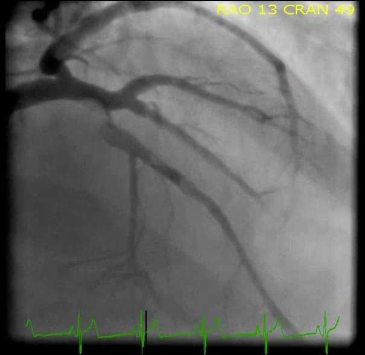

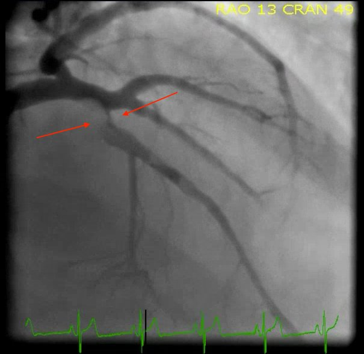
Hãy nhớ: Huyết khối liên tục tự tiêu và lan rộng, vì vậy trừ khi có thêm một điện tâm đồ 12 chuyển đạo giống hệt được ghi đúng vào thời điểm chụp mạch, không ai có thể biết chắc chắn tình trạng động mạch vào thời điểm ghi điện tâm đồ. Tắc 95%, tùy thuộc vào tình trạng dòng chảy và nhiều yếu tố khác (đặc biệt là sự hiện diện của các mảnh kết tập tiểu cầu–fibrin ở phía hạ lưu và cả dòng chảy bàng hệ) có thể biểu hiện bằng nhiều hình thái. Dù tắc hoàn toàn hay không, điện tâm đồ (và cơn đau) đều thay đổi động, chứng tỏ có một huyết khối không ổn định có thể lan rộng và gây tắc hoàn toàn bất cứ lúc nào. Có thể đã có tắc 100% vào thời điểm ghi điện tâm đồ, nhưng không thể nói chắc chắn. Dù thế nào đi nữa, mặc dù động mạch còn thông và có dòng chảy, động mạch vẫn có nguy cơ tắc hoàn toàn bất cứ lúc nào.

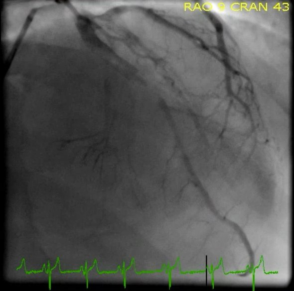

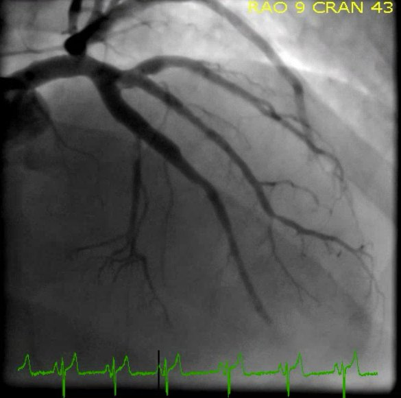
Cơn đau của bệnh nhân hết hoàn toàn.
Đây là điện tâm đồ sau can thiệp:

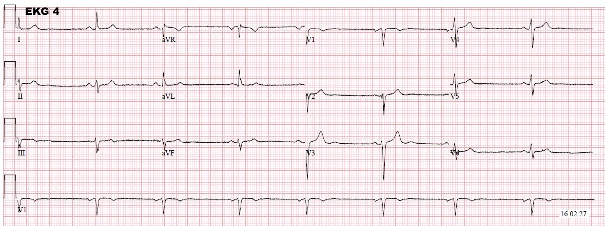

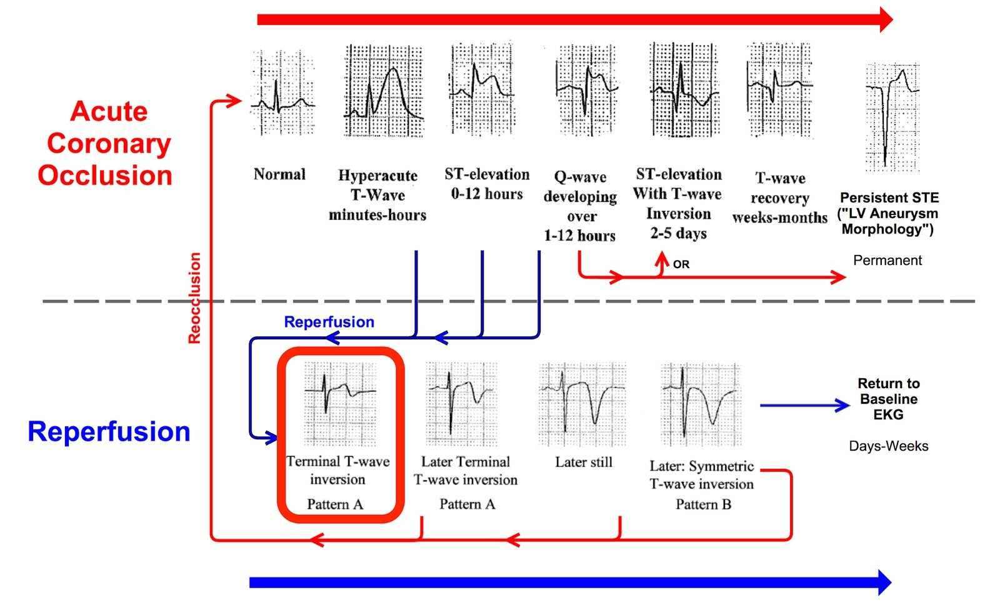
Hết đau và hình ảnh tái tưới máu trên điện tâm đồ là bằng chứng xác định của tái tưới máu thực sự.
Bệnh nhân được nhập đơn vị chăm sóc mạch vành (CCU) và theo dõi trong khi điều chỉnh các yếu tố nguy cơ và chỉnh liều thuốc.
Nhờ Dr. Thompson nhận ra sớm, troponin T của bệnh nhân chỉ đạt đỉnh 0,51 ng/mL (tương đối nhỏ so với vùng cơ tim nguy cơ) và bắt đầu giảm dần.

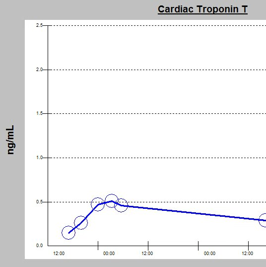
Đây là điện tâm đồ của bệnh nhân vào ngày thứ 2 (không có ghi chép nào về lý do chỉ định điện tâm đồ này, hay bệnh nhân có đau trở lại hay không):

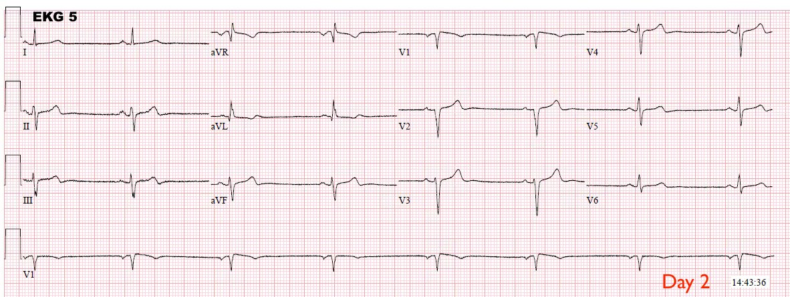
Một giờ sau (thường người ta không ghi điện tâm đồ dày như vậy vào ngày thứ 2 trừ khi bệnh nhân than phiền điều gì đó), đây là điện tâm đồ của bệnh nhân (1545 ngày thứ 2):

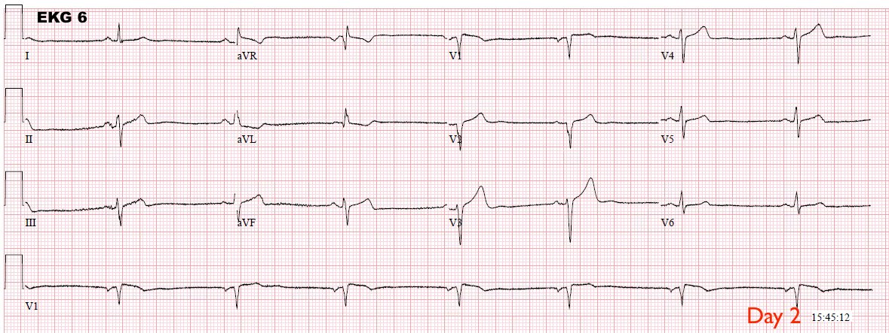
Tắc lại!!!
Điện tâm đồ này có giá trị chẩn đoán xác định tắc lại lúc 15:45. Các sóng T đảo ngược phần cuối đã bị xóa mất bởi sóng T dương, tối cấp tái xuất hiện ở cùng vùng phân bố như lần trước. Có ST chênh lên tái phát ở V2-V4, nhưng không đạt “tiêu chuẩn STEMI.”

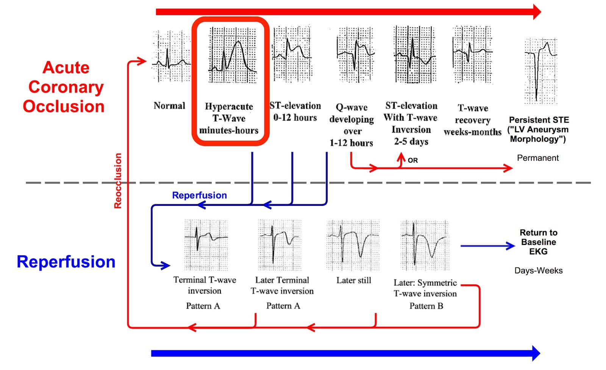
Không có gì được ghi chép trong khoảng thời gian này.
Bệnh nhân này lẽ ra phải được chụp mạch vành cấp cứu và tái tưới máu ngay lập tức, nhưng vì những lý do không rõ, điều đó đã không được thực hiện.
Một điện tâm đồ ghi lại khác được thực hiện 1 giờ sau đó:

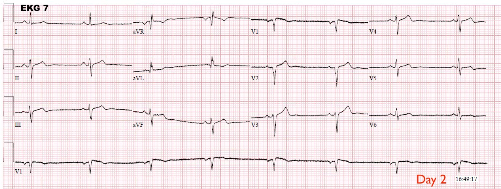
Bệnh nhân này rõ ràng có một huyết khối không ổn định đang gây tắc, tái tưới máu rồi lại tắc trở lại ở LAD. Có vẻ như điều này đã không được nhận ra, vì không có ghi chép nào.
Cuối cùng, khoảng 6 giờ sau, có ghi chép rằng bệnh nhân than đau ngực tái phát, kèm buồn nôn và vã mồ hôi. Ghi chép cho biết bệnh nhân mô tả cơn đau “giống hệt” cơn đau ngực mà bệnh nhân đã bị ở khoa cấp cứu.
Đây là điện tâm đồ của bệnh nhân vào thời điểm đó:

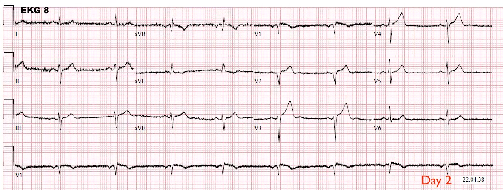
Dường như nhóm điều trị không thấy bằng chứng nào của STEMI và không kích hoạt phòng thông tim vào lúc này.
Thay vào đó, bệnh nhân được cho morphin lúc 22:15.
Ngay sau đó, cơn đau đỡ nhưng không hết hoàn toàn.
Đây là điện tâm đồ lúc 22:30:

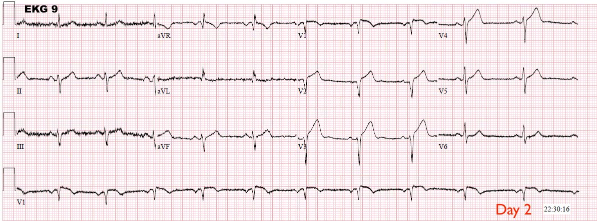
Vẫn không kích hoạt phòng thông tim. Bệnh nhân được cho nitroglycerin lúc 22:31 nhưng triệu chứng không thay đổi.
Thêm 30 phút nữa trôi qua. Điện tâm đồ ghi lại lúc 23:00:

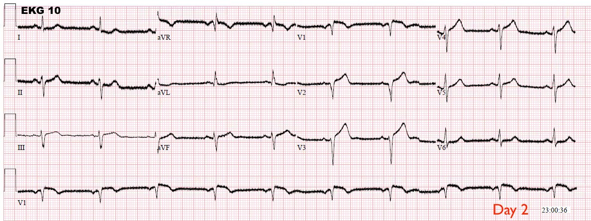
Vẫn không kích hoạt phòng thông tim. Cho thêm morphin.
Thêm 41 phút nữa trôi qua. Điện tâm đồ ghi lại lúc 23:41:

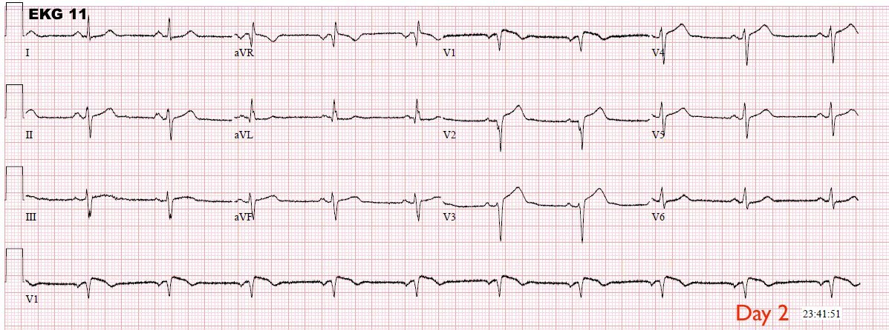
Vào lúc này, khi kết quả troponin tiếp theo trả về 0,33 ng/mL (chỉ cao hơn một chút so với giá trị troponin gần nhất vốn trước đó đang có xu hướng giảm), họ mới kích hoạt phòng thông tim.
Tất nhiên họ đã thấy tắc lại ở LAD đoạn gần:

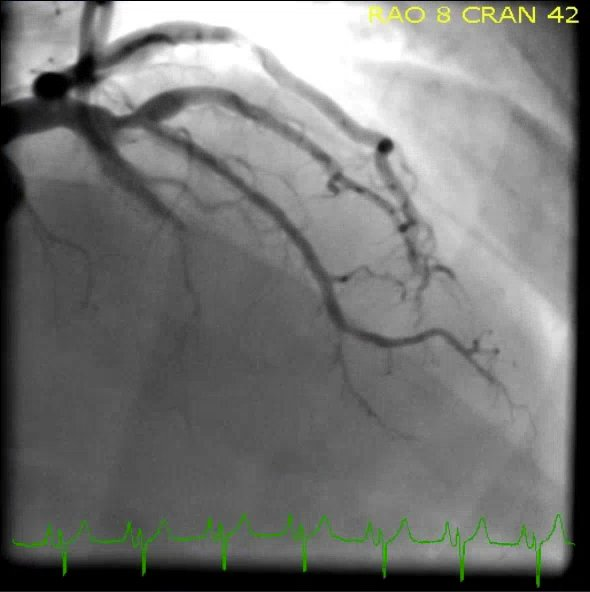

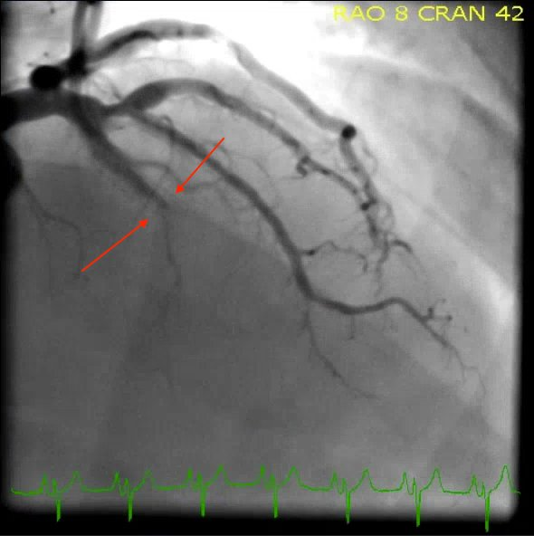

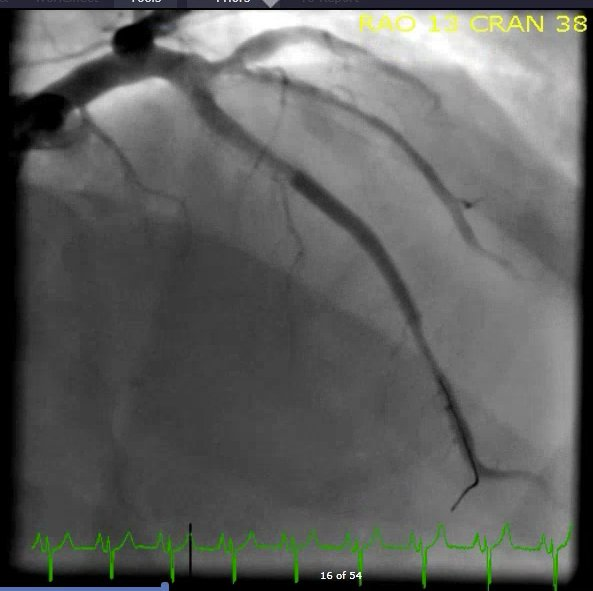
Thủ thuật có biến chứng “vỡ LAD đoạn giữa-xa sau khi nong bằng bóng 3,0 mm, được che phủ bằng stent có màng bọc graftmaster 3,5.”
Cuối cùng bệnh nhân phải đặt tổng cộng 5 stent chồng lên nhau từ LAD đoạn gần đến đoạn giữa để xử lý chỗ thủng và các tổn thương ban đầu.
Tin hay không thì tùy, biến cố này đã được ghi nhận là “NSTEMI liên quan thành trước.”
Các điện tâm đồ ghi lại cho thấy tái tưới máu thành công, nhưng với nhồi máu đã hoàn tất đáng kể ở thành trước, tăng tiến sóng R xấu đi và hình thái phình thất trái.
Troponin T đạt đỉnh khoảng 2,25 ng/mL (khá cao).

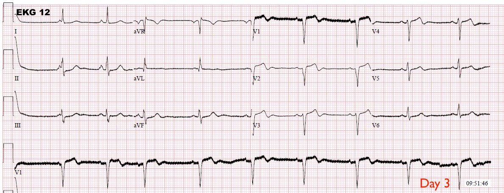
Xin lưu ý: chỉ vì điện tâm đồ hiện cho thấy hình thái LVA không có nghĩa là nó sẽ giữ nguyên như vậy trong suốt giai đoạn hồi phục hay sẽ hình thành một phình thất trái thực sự về mặt giải phẫu. Theo kinh nghiệm của Dr. Smith, phải chờ ít nhất hai tuần mới biết điều đó có xảy ra hay không.

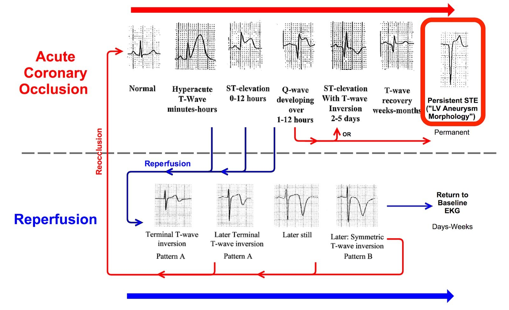

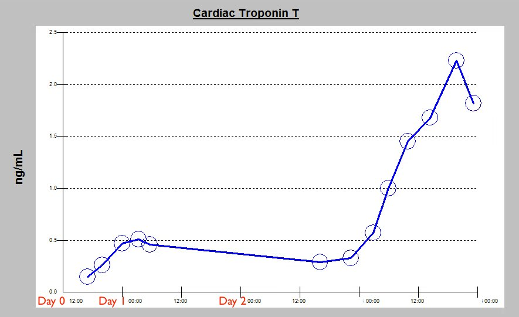
Không may cho bệnh nhân, bệnh nhân đã bị một cơn nhồi máu cơ tim lớn hơn nhiều so với lần tắc mạch ban đầu 2 ngày trước đó. Diễn biến troponin và hình thái phình thất trái mới cho thấy cơn nhồi máu cơ tim lớn hơn bao nhiêu khi có sự chậm trễ 2 giờ trước khi thông tim.
Thực chất, bệnh nhân này đã trải qua một thử nghiệm ngẫu nhiên có đối chứng với N bằng 1. Bệnh nhân bị tắc mạch vành cấp (hoặc gần tắc) ít nhất hai lần. Điểm khác biệt giữa hai biến cố là cách đọc điện tâm đồ.
Lần tắc mạch #1
Lần đầu tiên, bệnh nhân được phân ngẫu nhiên cho một bác sĩ tình cờ đã được đào tạo về đọc điện tâm đồ nâng cao (Dr. Thompson đã tự học trong nhiều năm bằng Dr. Smith’s ECG blog và đã nhiều lần thực hành đọc điện tâm đồ cùng tôi). Trong biến cố này, từ lúc khởi phát đau đến khi quyết định tiến hành tái tưới máu cấp cứu chưa đến 10 phút.
11:10 – đau tái phát
11:12 – chuyên gia đọc điện tâm đồ nghi ngờ OMI và quyết định kích hoạt phòng thông tim
11:24 – đạt tiêu chuẩn STEMI
Thời gian từ lúc đau đến khi quyết định thông tim: dưới 10 phút
Troponin T đỉnh: 0,51 ng/mL
Thay đổi từ phức bộ QRS nền đến phức bộ QRS sau can thiệp: không có sóng Q mới đáng kể hay hình thái LVA, QRS về cơ bản không bị ảnh hưởng
Lần tắc mạch #2
Lần thứ hai bệnh nhân bị OMI đã được chứng minh ở LAD, bệnh nhân tình cờ gặp những bác sĩ dùng tiêu chuẩn STEMI kinh điển để quyết định ai cần điều trị tái tưới máu cấp cứu. Trong biến cố này, từ lúc khởi phát đau đến khi quyết định tiến hành tái tưới máu cấp cứu mất một giờ 41 phút. Điều này xảy ra bất chấp việc họ có lợi thế là biết chắc chắn bệnh nhân có bệnh lý LAD cấp với một stent mới đặt (xác suất tiền nghiệm cao hơn nhiều).
22:00 – đau tái phát
22:04 – nhóm điều trị cho là không có STEMI (điện tâm đồ cho thấy rõ OMI)
22:15 – cho morphin, đau cải thiện nhưng OMI vẫn tồn tại trên điện tâm đồ
22:30 – rõ ràng đạt tiêu chuẩn STEMI, có lẽ nhóm điều trị đã bỏ sót
23:41 – troponin tăng so với lần đo trước, quyết định kích hoạt phòng thông tim
Thời gian từ lúc đau đến khi quyết định thông tim: 1 giờ 41 phút
Troponin T đỉnh: 2,25 ng/mL
Thay đổi từ phức bộ QRS nền đến phức bộ QRS sau can thiệp: hình thái phình thất trái mới, cho thấy nhồi máu xuyên toàn bộ bề dày thành trước
Nếu tôi là người phụ trách bệnh nhân này, tôi đã kích hoạt phòng thông tim lúc 15:45 ngày thứ 2 (điện tâm đồ 6 được trình bày lại bên dưới), vì điện tâm đồ đó hoàn toàn có giá trị chẩn đoán tắc lại vào thời điểm ấy. Trong tình huống giả định này, tôi tin rằng người ta sẽ phát hiện bệnh nhân bị tắc hoàn toàn hoặc có một huyết khối không ổn định chưa gây tắc hoàn toàn, sớm hơn trọn 6 giờ trước lần tắc lại lúc 22:00. Lý tưởng nhất là biến cố tắc lại nặng hơn của bệnh nhân đã có thể được giảm nhẹ hoặc ngăn chặn hoàn toàn.
Kết quả của nghiên cứu với N bằng 1 này khá rõ ràng. Bạn muốn người thân của mình được loại bác sĩ nào điều trị???
Chúng tôi hiện đang thu thập dữ liệu trong một nghiên cứu bệnh-chứng hồi cứu, đọc mù, để đánh giá xem việc đọc điện tâm đồ nâng cao tốt hơn tiêu chuẩn STEMI đến mức nào. Lý tưởng nhất là nghiên cứu này sẽ khơi mào thêm các nghiên cứu khác, để một ngày nào đó có cơ sở tiến hành các nghiên cứu can thiệp, qua đó có thể chứng minh rằng nhận ra OMI sớm nhờ đọc điện tâm đồ nâng cao giúp cải thiện kết cục.
Những điểm cần học:
Dr. Thompson và nhiều độc giả khác đã đóng góp cho blog là minh chứng cho thấy nội dung giảng dạy của Dr. Smith có thể học được một cách đáng tin cậy nếu bạn dành thời gian thực hành.
Đọc điện tâm đồ ở mức chuyên gia vượt trội so với mô hình STEMI hiện nay. Bệnh nhân xứng đáng được nhận ra và điều trị tắc mạch vành cấp càng sớm càng tốt.
Opioid nhiều khả năng làm chậm việc nhận ra OMI ở những bác sĩ không biết đọc điện tâm đồ nâng cao, vì thuốc làm giảm triệu chứng mà không tác động đến huyết khối đang gây tắc. Tránh dùng opioid ở bệnh nhân có thể bị hội chứng vành cấp (ACS) trừ khi đã quyết định đưa bệnh nhân vào phòng thông tim cấp cứu, nếu không bệnh nhân có nguy cơ bị bỏ sót hoặc chậm phát hiện tắc mạch vành.
Sóng T tối cấp thường xuất hiện trước ST chênh lên và báo hiệu lợi ích còn lớn hơn của điều trị tái tưới máu cấp cứu so với tiêu chuẩn STEMI, vì còn nhiều cơ tim hơn để cứu.

———————————————————–
Bình luận của KEN GRAUER, MD (2/9/2018):
———————————————————–
Một chuyên luận tuần tự tuyệt vời của Drs. Meyers và Smith về ca bệnh rất sâu sắc này do Dr. Nic Thompson gửi. Xét theo bệnh sử lâm sàng được báo cáo — các điện tâm đồ liên tiếp trong ca này đã cung cấp đầy đủ dấu hiệu về các biến cố ngay khi chúng đang diễn ra — nhưng việc nhận ra sớm, rồi sau đó không nhận ra các biến cố, hóa ra phụ thuộc rõ ràng vào khả năng đọc điện tâm đồ của người bác sĩ phụ trách bệnh nhân vào thời điểm đó. Tôi xin đề xuất thêm một vài suy nghĩ cho phần bàn luận xuất sắc của Drs. Meyers và Smith:
- Không chỉ là đọc điện tâm đồ chưa tối ưu — các vấn đề trong xử trí sau khi tắc lại xảy ra bao gồm: i) không ghi chép lý do thực hiện nhiều điện tâm đồ vào Ngày #2 (điều gần như khiến tôi tự hỏi LIỆU nhóm điều trị có thực sự xem những điện tâm đồ đó hay không …); ii) không lắng nghe bệnh nhân (người đã mô tả cơn đau ngực tái phát “giống hệt” cơn đau lúc nhập viện) — và rõ ràng không nhận thức được rằng đau tái phát có thể báo hiệu tắc lại; và, iii) không dùng điện tâm đồ sau can thiệp ( = điện tâm đồ 4) làm “bản ghi nền mới” để so sánh từng chuyển đạo với các điện tâm đồ liên tiếp sau đó — vốn cho thấy ST chênh lên cấp không thể nhầm lẫn mà lẽ ra không thể bị bỏ sót nếu đã so sánh từng chuyển đạo.
- LƯU Ý: Tôi hoàn toàn thừa nhận rằng phân tích hồi cứu từ sự thoải mái của chiếc ghế ngả lưng của tôi dễ hơn nhiều so với việc ở “tuyến đầu”. Ý tôi là những bước đơn giản như ghi chép lý do chỉ định thêm các bản ghi — nâng mức độ nghi ngờ về khả năng tắc lại cấp khi có đau ngực dữ dội tái phát — dùng bản ghi sau can thiệp làm điện tâm đồ “nền” mới — rồi tạo thói quen so sánh từng chuyển đạo giữa điện tâm đồ “nền” và các bản ghi sau đó được ghi vào lúc đau ngực tái phát — sẽ giúp RẤT NHIỀU trong việc cho bạn câu trả lời khi nào cần thông tim lại khẩn cấp.
- Điều thú vị là các bất thường điện tâm đồ kín đáo mà Dr. Thompson tinh ý nhận ra không gợi ý LAD là động mạch “thủ phạm”. Sau đó chúng tôi biết qua thông tim rằng lý do là LAD “vòng qua mỏm” (wraparound), giải thích các thay đổi cấp ở chuyển đạo chi. Điểm mấu chốt là các dấu hiệu điện tâm đồ ban đầu đáng ngờ OMI đang diễn ra sẽ không phải lúc nào cũng chỉ đúng động mạch “thủ phạm” thật sự. Điều quan trọng là trong bối cảnh có “bệnh sử phù hợp” (tức là khó chịu ở ngực mới khởi phát, có tính chất do tim) — thì những bất thường kín đáo ở một loạt chuyển đạo LÀ lý do để lo ngại, bất kể ban đầu có đạt tiêu chuẩn STEMI hay không.
- Cuối cùng — tôi muốn bổ sung rằng ngoài các chuyển đạo II, III, aVF và aVL — chuyển đạo V2 và V3 cũng bất thường rõ ràng trên điện tâm đồ ban đầu ( = điện tâm đồ 1 = bản ghi Ở GIỮA có viền đỏ trong Hình 1). Đây là một chi tiết tinh tế khác cần được nhận ra từ điện tâm đồ ban đầu. Cụ thể, đoạn ST ở chuyển đạo V2 thẳng — trong khi bình thường nó hầu như không bao giờ thẳng như vậy. Và, sóng T ở chuyển đạo V3 cao không tương xứng so với sóng r nhỏ ở chuyển đạo này. Dù riêng những dấu hiệu này có thể chưa đủ để gây lo ngại — trong bối cảnh các bất thường kín đáo đã được chỉ ra ở 4 chuyển đạo chi, những bất thường này ở chuyển đạo V2 và V3 rõ ràng phải làm tăng thêm mối lo ngại của chúng ta.
- Một khi đã có điện tâm đồ cũ (ghi 2 năm trước = bản ghi TRÊN CÙNG trong Hình 1) — thì KHÔNG còn nghi ngờ gì rằng đoạn ST thẳng ở chuyển đạo V2 và sóng T cao không tương xứng ở chuyển đạo V3 là những dấu hiệu mới trên điện tâm đồ 1.
- Trên điện tâm đồ 2 ( = bản ghi DƯỚI CÙNG trong Hình 1) — lưu ý sóng T ở chuyển đạo V3 giờ còn cao hơn nữa (sóng T ở V4 cũng vậy). Kiểu sóng T nhọn quá mức ở chuyển đạo V3 (và ở các chuyển đạo trước khác) này tiếp tục lặp lại trên các điện tâm đồ liên tiếp trong ca này, ở các điện tâm đồ 6, 8 và 9. Một số bệnh nhân là như vậy — tức là họ xuất hiện một loạt thay đổi lặp lại được mỗi khi thiếu máu cục bộ cấp/tắc lại xảy ra. Nhận biết một “kiểu hình” nhất định mà một số bệnh nhân có thể là MANH MỐI then chốt cho bạn biết ngay rằng “biến cố (tức là thiếu máu cục bộ hoặc tắc mạch) đang xảy ra lần nữa!”

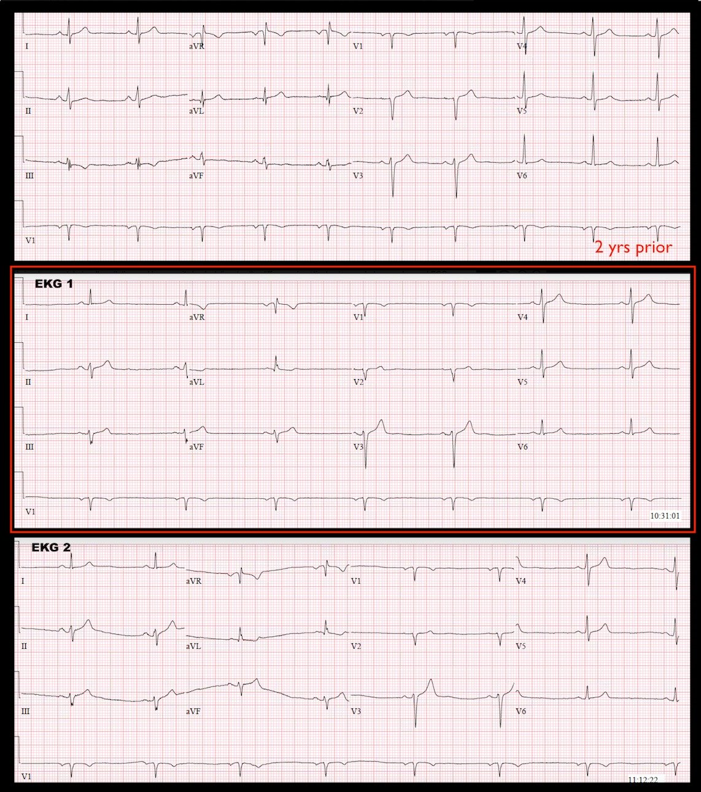
Chúng tôi xin cảm ơn Dr. Nic Thompson đã gửi ca bệnh rất sâu sắc này!